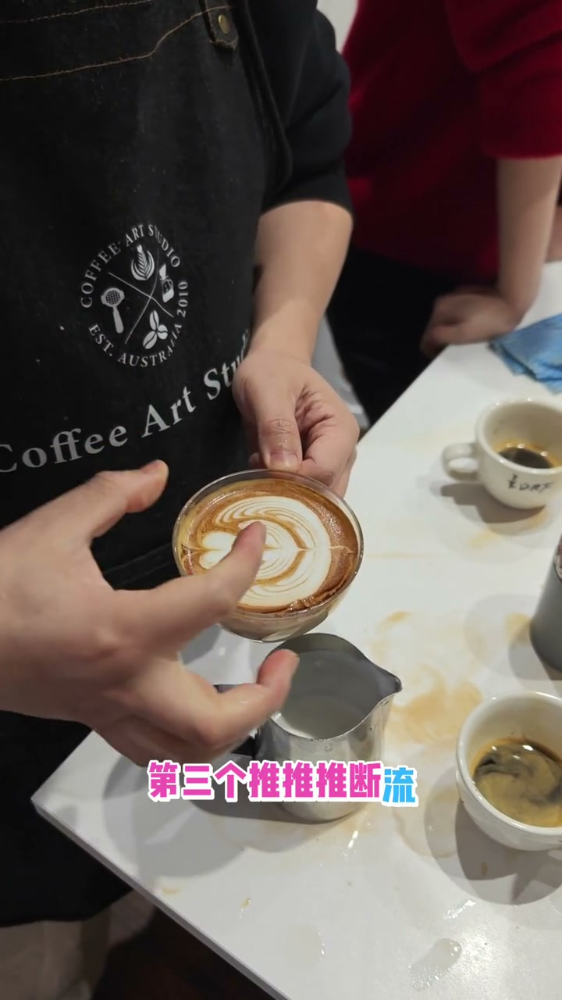
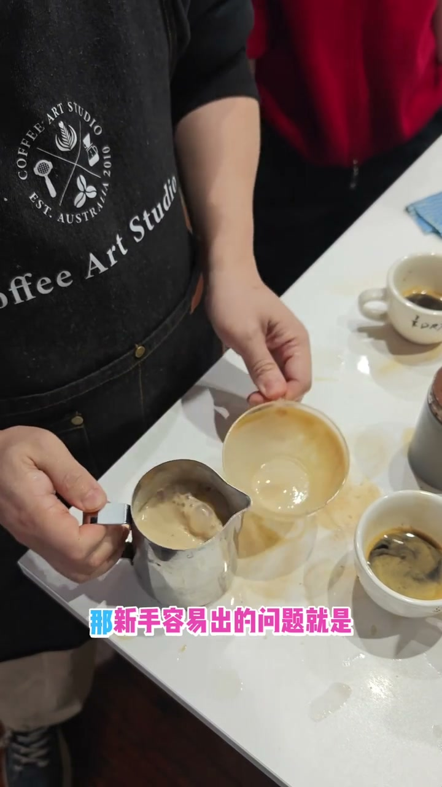
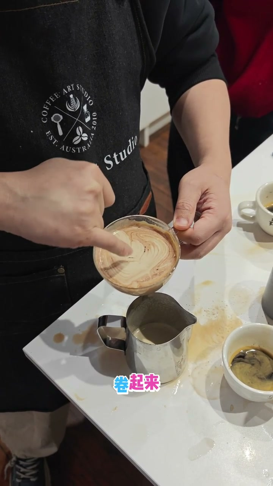

压纹郁金香几个要点
查看原视频核心要点
- 压纹郁金香的关键在于三层推纹的力度递减
- 第一层边摆边推最多，第二层推少，第三层更少
- 每一层都是从中间位置开始，边摆动边向前推
- 正确推纹会产生内卷褶皱效果，而非平直或开裂
三层推纹：大中小递减
压纹郁金香就是边摆动边前推（"压进去"），形成三层有层次的纹路。关键是：
- 第一层（底）：推最多，距离最远
- 第二层（中）：推少一些，从中间开始推到微量的前面
- 第三层（顶）：推最少，轻微前推即可
- 每层完成后断流再开始下一层

两个常见新手错误
❌ 第一次推太多
第一层就推过头→纹路开裂
最后几层串在一起→很乱
❌ 完全不推
只摆动不推→变成叶子效果
中间凸出来，边毛躁
没有内卷褶皱

正确效果：内卷褶皱
正确的推纹效果是轻微前推，不需要夸张。推的时候边缘会出现向内卷起来的褶皱效果——这是压纹郁金香的重要特征。边应该是内卷的，不是平直或外翻。

判断标准：边缘内卷=好；边缘平直/外翻=泡太薄或没推到位
奶泡厚度的影响
奶泡太薄→边缘变成平的效果。奶泡够厚→边缘圆润、褶皱饱满。所以完成郁金香前检查奶泡的厚度是否适中。
文字转录（46段）
以下内容按 Whisper 原始分段完整呈现，可能包含识别误差。
- [0:00]倒压进去,看,这叫压进去
- [0:03]就刚刚你做的动作,压进去
- [0:06]压进去,稍微细
- [0:09]这是有预定下的层次,一层,两层,三层
- [0:12]又有一个纹路的挤压,挤进去
- [0:15]所以把你刚才做的鸭子,边摆边推推推
- [0:18]断流,第二个倒快摆,推推推断流
- [0:21]第三个推推推断流
- [0:23]那第一个可以摆,推多一点
- [0:26]第二个推少,第三个推得更少
- [0:29]因为它是大中小,你可以推得多
- [0:32]推的距离远一点,或者说
- [0:35]前面呢,我们从中间开始推
- [0:38]中间开始推,就可以推到前面一点点
- [0:41]还是中间再推到微量的前面
- [0:44]第三个就可以远一点,OK,感受一下
- [0:47]那新手龙一出的问题,就是第一次推太多
- [0:50]要不然推太多,要不然不推
- [0:53]第一就推太多,推推推,推成这样子的
- [0:56]推成开裂
- [0:59]最后就串在一起就很乱
- [1:02]它也有效果的
- [1:05]新手,这时候推太多,不要推太多
- [1:08]另外一个新手就是容易不推
- [1:10]不推就变成叶子了,你看
- [1:13]我只摆,你看没有推,变成这个效果,凸出来的
- [1:16]你看凸出来的
- [1:19]这样中间就比较厚,厚
- [1:22]然后这个边就看这样子毛躁,它没有这样卷起来
- [1:25]卷起来,正常我们边应该是这样卷的
- [1:28]往内包,再看一次正确的效果
- [1:31]你是有微量的推
- [1:34]没有推的很夸张
- [1:37]推推推,你看有点内卷哦
- [1:40]推推推,你看内卷哦
- [1:43]推推推,你看内卷哦
- [1:46]然后它会推的比较扁,这个距离是差不多
- [1:49]像这个比较好,这个太薄了
- [1:52]因为我现在泡太少了
- [1:54]泡多一点就要厚一点
- [1:57]所以说你的叶片厚度是差不多的
- [2:00]然后这个有内卷的褶皱,你看
- [2:03]褶皱卷的效果,就是一个好的效果
- [2:06]我这个泡太薄,薄的话这边会变成平的效果
- [2:09]如果泡够厚,这边会变成圆润的效果
- [2:12]试一下